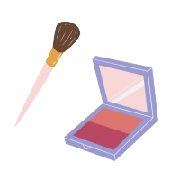
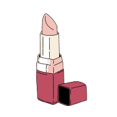

Na InfoBeauty, acreditamos que a beleza e a inovação podem andar de mãos dadas para criar soluções excepcionais. Somos uma empresa apaixonada por tecnologia, design e transformação digital, com um compromisso inabalável em proporcionar experiências deslumbrantes e funcionais aos nossos clientes.
Nossa história é moldada por uma equipe diversificada e talentosa de profissionais que são apaixonados por desvendar o potencial da tecnologia em prol da estética e do bem-estar. Fundada em 2020, a InfoBeauty rapidamente se destacou como um líder inovador no setor de beleza digital.
Na Infobeauty, nossa missão é potencializar a autoexpressão e a confiança de cada indivíduo, oferecendo produtos de maquiagem inovadores e de alta qualidade, enriquecidos por uma abordagem educativa. Comprometemo-nos a fornecer informações precisas e relevantes sobre as últimas tendências e técnicas de maquiagem, capacitando nossos clientes a explorar e aprimorar sua beleza única. Buscamos constantemente a inovação, a sustentabilidade e a inclusividade, promovendo um padrão de beleza que celebra a diversidade. Na Infobeauty, acreditamos que a verdadeira beleza reside na autenticidade, e estamos empenhados em criar um impacto positivo, inspirando a confiança e a autoestima em cada jornada de autodescoberta.
Aplicativos e Plataformas Digitais: Desenvolvemos aplicativos e plataformas de beleza personalizados que permitem que os usuários experimentem virtualmente produtos de beleza, aprimorem sua imagem e recebam recomendações personalizadas.
Consultoria em Beleza Digital: A InfoBeauty oferece serviços de consultoria especializada para marcas de beleza, ajudando-as a navegar no mundo em constante evolução da beleza digital.
Pesquisa e Inovação: Investimos continuamente em pesquisa e desenvolvimento para impulsionar a inovação em tecnologias de beleza, como realidade aumentada, IA e análise de imagem.

INOVAÇÃO: Acreditamos que a inovação é a chave para a evolução. Buscamos constantemente novas maneiras de aprimorar a experiência de beleza digital.
INTEGRIDADE: Valorizamos a transparência, honestidade e respeito em todas as nossas interações, internas e externas.
CRIATIVIDADE: Acreditamos que a criatividade é a essência da beleza. Promovemos um ambiente que nutre a criatividade em tudo o que fazemos.
EMPODERAMENTO: Queremos capacitar nossos clientes a se sentirem confiantes e no controle de sua própria beleza.
Na InfoBeauty, estamos empenhados em continuar a moldar o futuro da beleza digital. Junte-se a nós nessa jornada e descubra um novo mundo de possibilidades de beleza, onde a inovação encontra a estética, e a tecnologia se une à confiança.